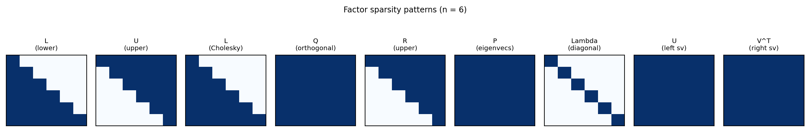

import numpy as np
import matplotlib.pyplot as plt
import matplotlib.patches as mpatches
import scipy.linalg
rng = np.random.default_rng(42)
n = 6
A_sq = rng.standard_normal((n, n))
A_sq = A_sq @ A_sq.T + n * np.eye(n) # shape (n, n) SPD
P_mat, L, U = scipy.linalg.lu(A_sq) # PA = LU
L_cho = np.linalg.cholesky(A_sq) # A = L L^T
Q_qr, R_qr = np.linalg.qr(A_sq) # A = Q R
vals, P_eig = np.linalg.eigh(A_sq) # symmetric -- spectral
Lam = np.diag(vals) # shape (n, n)
U_svd, s, Vt = np.linalg.svd(A_sq, full_matrices=False) # shape (n,)
threshold = 1e-10
patterns = [
(np.abs(L) > threshold, 'L\n(lower)'),
(np.abs(U) > threshold, 'U\n(upper)'),
(np.abs(L_cho) > threshold, 'L\n(Cholesky)'),
(np.abs(Q_qr) > threshold, 'Q\n(orthogonal)'),
(np.abs(R_qr) > threshold, 'R\n(upper)'),
(np.abs(P_eig) > threshold, 'P\n(eigenvecs)'),
(np.abs(Lam) > threshold, 'Lambda\n(diagonal)'),
(np.abs(U_svd) > threshold, 'U\n(left sv)'),
(np.abs(Vt) > threshold, 'V^T\n(right sv)'),
]
fig, axes = plt.subplots(1, 9, figsize=(13, 2.0))
for ax, (pat, label) in zip(axes, patterns):
ax.imshow(pat, cmap='Blues', vmin=0, vmax=1, aspect='auto')
ax.set_title(label, fontsize=7.5)
ax.set_xticks([])
ax.set_yticks([])
plt.suptitle('Factor sparsity patterns (n = 6)', fontsize=9, y=1.03)
plt.tight_layout()
plt.show()